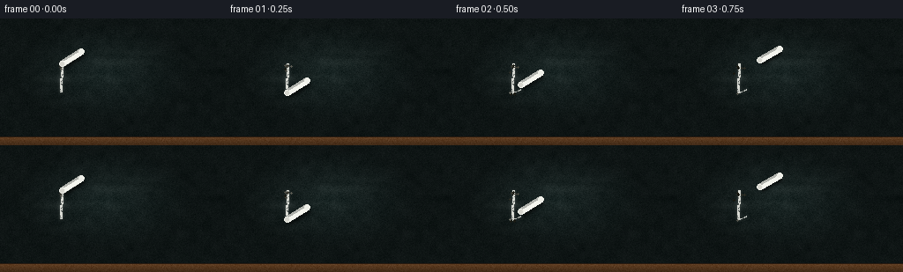
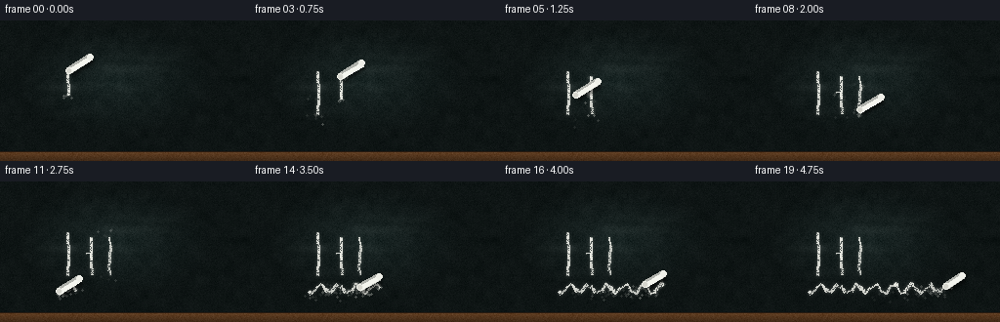
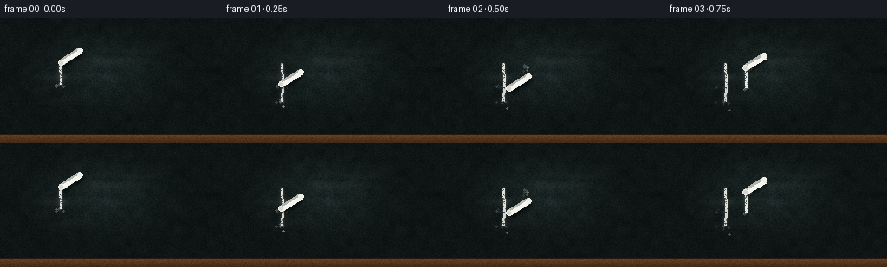
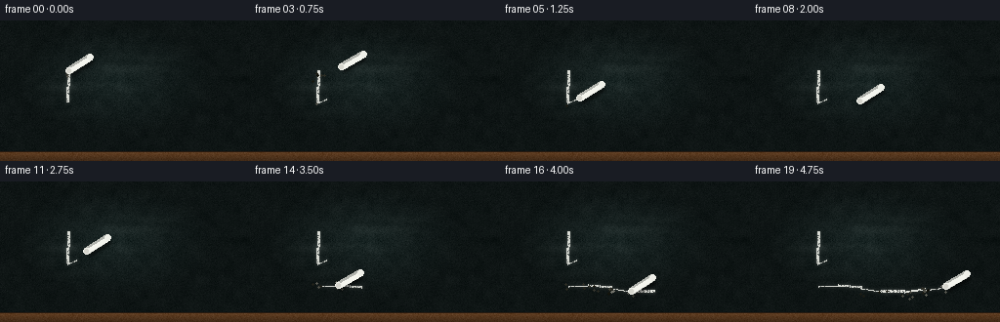
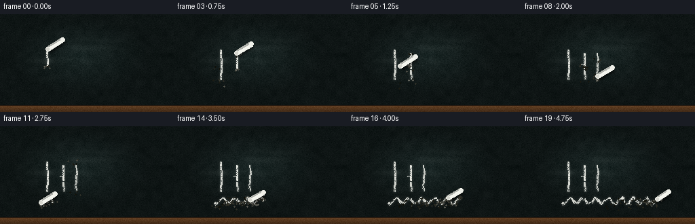
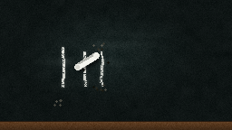
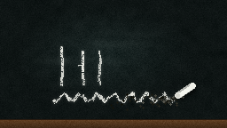
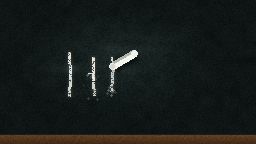
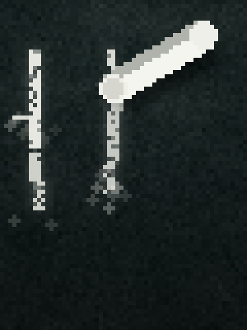

CODING AGENTS AS PIXEL WORLD MODELS
traex/Seed-2.1-Pro-0915 · phygen_031
点击播放 · 原生 RGB 像素
此结果可播放，但该运行尚未通过最终提交审核。页面展示不代表评测通过。
逐轮保存的候选
回放视频、检查图与代码变化。
每份候选均可单独播放。实际图片检查记录在下方工具轨迹中。
候选 01播放与检查图
点击播放 · 原生 RGB 像素

展开代码变化
--- 上一保存版本
+++ 本次保存版本
@@ -0,0 +1,195 @@
+"""Text-to-video: white chalk writing on a rough dark blackboard.
+
+Pure numpy/PIL rendering. Produces 20 RGB frames (256x144 @ 4fps) showing a
+chalk stick moving along a writing path, leaving a grainy chalk trail with
+dust particles, surface texture and slight chalk wear.
+"""
+import numpy as np
+from PIL import Image, ImageDraw, ImageFilter
+
+import artifact_io
+
+W, H, N, FPS = 256, 144, 20, 4.0
+rng = np.random.default_rng(31)
+
+# ---------------------------------------------------------------- board base
+# Dark, slightly green-tinted blackboard with rough grain and blotches.
+base_color = np.array([26, 38, 37], dtype=np.float32)
+board = np.ones((H, W, 3), dtype=np.float32) * base_color
+
+grain = rng.normal(0, 4.5, (H, W, 1)).astype(np.float32)
+board += grain
+
+# Low-frequency mottling from upscaled random patches.
+small = rng.normal(0, 1, (H // 8, W // 8)).astype(np.float32)
+mottle = np.asarray(
+ Image.fromarray(((small - small.min()) / (np.ptp(small) + 1e-9) * 255).astype(np.uint8))
+ .resize((W, H), Image.Resampling.BICUBIC), dtype=np.float32) / 255.0 - 0.5
+board += mottle[:, :, None] * 14.0
+
+# Faint old erased-chalk smudges.
+smudge = Image.new("L", (W, H), 0)
+sd = ImageDraw.Draw(smudge)
+for _ in range(7):
+ x0 = rng.integers(10, W - 60)
+ y0 = rng.integers(15, H - 25)
+ sd.line([(x0, y0), (x0 + rng.integers(30, 70), y0 + rng.integers(-4, 5))],
+ fill=int(rng.integers(8, 20)), width=int(rng.integers(3, 7)))
+smudge = np.asarray(smudge.filter(ImageFilter.GaussianBlur(2.5)), dtype=np.float32) / 255.0
+board += smudge[:, :, None] * np.array([200, 205, 195], dtype=np.float32)
+
+# Vignette / center lighting.
+yy, xx = np.mgrid[0:H, 0:W].astype(np.float32)
+rr = np.sqrt(((xx - W * 0.46) / W) ** 2 + ((yy - H * 0.42) / H) ** 2)
+light = np.clip(1.0 - rr * 1.15, 0.55, 1.0)
+board *= light[:, :, None]
+
+# Wooden rail along the bottom.
+rail_h = 9
+rail_noise = rng.normal(0, 5, (rail_h, W, 1)).astype(np.float32)
+rail = np.zeros((rail_h, W, 3), dtype=np.float32) + np.array([96, 62, 34], np.float32)
+rail += rail_noise
+for k in range(rail_h):
+ rail[k] *= 1.0 - 0.35 * k / rail_h
+board[H - rail_h:] = rail
+board[H - rail_h - 1, :] = np.array([40, 26, 16], np.float32)
+
+# ---------------------------------------------------------------- writing path
+# Strokes spelling "Hi" followed by a wavy underline. Lift segments move the
+# chalk through the air without depositing anything.
+strokes = [] # (points, writing)
+strokes.append(([(70, 52), (70, 96)], True)) # H left
+strokes.append(([(70, 96), (94, 52)], False)) # lift
+strokes.append(([(94, 52), (94, 96)], True)) # H right
+strokes.append(([(94, 96), (70, 74)], False)) # lift
+strokes.append(([(70, 74), (94, 74)], True)) # H bar
+strokes.append(([(94, 74), (112, 58)], False)) # lift
+strokes.append(([(112, 58), (112, 96)], True)) # i stem
+strokes.append(([(112, 96), (112, 49)], False)) # lift to dot
+strokes.append(([(112, 49), (112.6, 49)], True)) # i dot (press)
+strokes.append(([(112.6, 49), (58, 110)], False)) # lift
+wave = [(58 + 142 * t / 28, 110 + 5 * np.sin(t * 1.7)) for t in range(29)]
+strokes.append((wave, True)) # underline
+
+# Flatten into one polyline with per-vertex writing flags and arc lengths.
+pts, flags = [], []
+for i, (seg, writing) in enumerate(strokes):
+ for j, p in enumerate(seg):
+ if i > 0 and j == 0:
+ continue # shared vertex with previous stroke
+ pts.append(p)
+ flags.append(writing)
+pts = np.array(pts, dtype=np.float64)
+flags = np.array(flags, dtype=bool)
+seg_len = np.linalg.norm(np.diff(pts, axis=0), axis=1)
+cum = np.concatenate([[0.0], np.cumsum(seg_len)])
+total = cum[-1]
+
+def sample_path(s):
+ """Position + writing state at arc length s."""
+ s = np.clip(s, 0.0, total)
+ idx = int(np.searchsorted(cum, s, side="right") - 1)
+ idx = min(idx, len(pts) - 2)
+ u = (s - cum[idx]) / (seg_len[idx] + 1e-9)
+ pos = pts[idx] * (1 - u) + pts[idx + 1] * u
+ writing = bool(flags[idx] and flags[idx + 1])
+ return pos, writing
+
+# ------------------------------------------------------------- chalk deposit
+deposit = np.zeros((H, W), dtype=np.float32) # chalk alpha on board
+chalk_tint = np.array([232, 233, 226], dtype=np.float32)
+particles = [] # (x, y, vx, vy, life, bright)
+
+frames = []
+chalk_len = 27.0
+angle = -np.deg2rad(31) # stick points up-right from the tip
+
+for f in range(N):
+ s = total * f / (N - 1)
+ s_next = total * min(f + 1, N - 1) / (N - 1)
+ tip, writing = sample_path(s)
+ tip_next, writing_next = sample_path(s_next)
+
+ # Pressure / hand jitter while writing.
+ jitter = rng.normal(0, 0.7, 2) if writing else np.zeros(2)
+ tip_d = tip + jitter
+ tip_next_d = tip_next + (rng.normal(0, 0.7, 2) if writing_next else np.zeros(2))
+
+ if writing:
+ # Grainy stroke: soft mask gated by per-pixel noise.
+ mask = Image.new("L", (W, H), 0)
+ md = ImageDraw.Draw(mask)
+ width = int(rng.integers(2, 4))
+ md.line([tuple(tip_d), tuple(tip_next_d)], fill=255, width=width)
+ if np.linalg.norm(tip_next_d - tip_d) < 2.0: # pressed dot
+ md.ellipse([tip_d[0] - 2, tip_d[1] - 2, tip_d[0] + 2, tip_d[1] + 2], fill=255)
+ m = np.asarray(mask, dtype=np.float32) / 255.0
+ gate = rng.random((H, W))
+ m *= np.where(gate > 0.28, 1.0, rng.uniform(0.15, 0.6, (H, W)))
+ halo = np.asarray(mask.filter(ImageFilter.GaussianBlur(1.6)), dtype=np.float32) / 255.0 * 0.25
+ deposit = np.maximum(deposit, m * rng.uniform(0.8, 1.0))
+ deposit = np.maximum(deposit, halo)
+
+ # Chalk dust kicked up near the contact point.
+ for _ in range(rng.integers(4, 9)):
+ particles.append([
+ tip_d[0] + rng.normal(0, 2), tip_d[1] + rng.normal(0, 2),
+ rng.normal(0, 1.4), rng.uniform(0.3, 1.6),
+ rng.integers(3, 7), rng.uniform(0.35, 0.8),
+ ])
+ chalk_len = max(17.0, chalk_len - 0.18) # slow wear
+
+ # Composite board + chalk marks.
+ frame = board.copy()
+ d3 = deposit[:, :, None]
+ frame = frame * (1 - d3) + chalk_tint[None, None, :] * d3
+
+ img = Image.fromarray(np.clip(frame, 0, 255).astype(np.uint8), "RGB")
+ draw = ImageDraw.Draw(img)
+
+ # Dust particles (drift downward, fade out).
+ alive = []
+ for px, py, vx, vy, life, bright in particles:
+ life -= 1
+ if life <= 0:
+ continue
+ px += vx + rng.normal(0, 0.3)
+ py += vy + rng.normal(0, 0.3)
+ a = int(255 * bright * life / 7)
+ if 0 <= px < W and 0 <= py < H:
+ draw.ellipse([px - 1, py - 1, px + 1, py + 1], fill=(a, a, max(0, a - 8)))
+ alive.append([px, py, vx, vy, life, bright])
+ particles = alive
+
+ # Chalk stick, angled from the contact tip.
+ lift = 0.0 if writing else 5.0
+ tip_vis = tip_d + np.array([0.0, -lift])
+ wobble = angle + rng.normal(0, 0.015)
+ end = tip_vis + chalk_len * np.array([np.cos(wobble), np.sin(wobble)])
+
+ # Contact shadow and stick drop shadow.
+ shadow = Image.new("RGBA", (W, H), (0, 0, 0, 0))
+ shd = ImageDraw.Draw(shadow)
+ if writing:
+ shd.ellipse([tip_vis[0] - 3, tip_vis[1] - 2, tip_vis[0] + 3, tip_vis[1] + 2],
+ fill=(0, 0, 0, 110))
+ shd.line([tuple(tip_vis + (2, 3)), tuple(end + (2, 3))], fill=(0, 0, 0, 120), width=8)
+ shadow = shadow.filter(ImageFilter.GaussianBlur(1.4))
+ img = Image.alpha_composite(img.convert("RGBA"), shadow)
+ draw = ImageDraw.Draw(img)
+
+ # Stick body: gray edge, white core, rounded caps.
+ draw.line([tuple(tip_vis), tuple(end)], fill=(176, 178, 172, 255), width=8)
+ core_off = np.array([-np.sin(wobble), np.cos(wobble)]) * 1.2
+ draw.line([tuple(tip_vis + core_off), tuple(end + core_off)],
+ fill=(244, 245, 238, 255), width=5)
+ for p in (tip_vis, end):
+ draw.ellipse([p[0] - 3, p[1] - 3, p[0] + 3, p[1] + 3], fill=(238, 239, 232, 255))
+ # Slightly dusty tip.
+ draw.ellipse([tip_vis[0] - 2, tip_vis[1] - 2, tip_vis[0] + 2, tip_vis[1] + 2],
+ fill=(214, 214, 206, 255))
+
+ frames.append(np.asarray(img.convert("RGB"), dtype=np.uint8))
+
+artifact_io.save(np.stack(frames).astype(np.uint8), ".")
+print("saved", len(frames), "frames")
候选 02播放与检查图
点击播放 · 原生 RGB 像素


展开代码变化
--- 上一保存版本
+++ 本次保存版本
@@ -82,18 +82,40 @@
pts = np.array(pts, dtype=np.float64)
flags = np.array(flags, dtype=bool)
seg_len = np.linalg.norm(np.diff(pts, axis=0), axis=1)
-cum = np.concatenate([[0.0], np.cumsum(seg_len)])
+edge_write = flags[1:] # flag of the edge arriving at each interior vertex
+# Lifts move faster so more screen time is spent actually writing.
+weight = seg_len * np.where(edge_write, 1.0, 0.5)
+cum = np.concatenate([[0.0], np.cumsum(weight)])
total = cum[-1]
-def sample_path(s):
- """Position + writing state at arc length s."""
+def locate(s):
+ """Edge index + interpolation fraction at weighted arc length s."""
s = np.clip(s, 0.0, total)
idx = int(np.searchsorted(cum, s, side="right") - 1)
idx = min(idx, len(pts) - 2)
- u = (s - cum[idx]) / (seg_len[idx] + 1e-9)
- pos = pts[idx] * (1 - u) + pts[idx + 1] * u
- writing = bool(flags[idx] and flags[idx + 1])
- return pos, writing
+ u = (s - cum[idx]) / (weight[idx] + 1e-9)
+ return idx, u
+
+def position(s):
+ idx, u = locate(s)
+ return pts[idx] * (1 - u) + pts[idx + 1] * u
+
+def writing_pieces(s0, s1):
+ """All writing-edge fragments covered by the weighted interval [s0, s1]."""
+ i0, u0 = locate(s0)
+ i1, u1 = locate(s1)
+ pieces = []
+ for idx in range(i0, i1 + 1):
+ if not edge_write[idx]:
+ continue
+ a = u0 if idx == i0 else 0.0
+ b = u1 if idx == i1 else 1.0
+ if b <= a:
+ continue
+ pa = pts[idx] * (1 - a) + pts[idx + 1] * a
+ pb = pts[idx] * (1 - b) + pts[idx + 1] * b
+ pieces.append((pa, pb, seg_len[idx] * (b - a)))
+ return pieces
# ------------------------------------------------------------- chalk deposit
deposit = np.zeros((H, W), dtype=np.float32) # chalk alpha on board
@@ -107,37 +129,38 @@
for f in range(N):
s = total * f / (N - 1)
s_next = total * min(f + 1, N - 1) / (N - 1)
- tip, writing = sample_path(s)
- tip_next, writing_next = sample_path(s_next)
-
- # Pressure / hand jitter while writing.
- jitter = rng.normal(0, 0.7, 2) if writing else np.zeros(2)
- tip_d = tip + jitter
- tip_next_d = tip_next + (rng.normal(0, 0.7, 2) if writing_next else np.zeros(2))
+ tip = position(s)
+ pieces = writing_pieces(s, s_next)
+ writing = bool(edge_write[locate(s)[0]]) if f < N - 1 else bool(edge_write[-1])
+ tip_d = tip + (rng.normal(0, 0.7, 2) if writing else np.zeros(2))
+
+ mask = Image.new("L", (W, H), 0)
+ md = ImageDraw.Draw(mask)
+ for pa, pb, covered in pieces:
+ pa_d = pa + rng.normal(0, 0.6, 2)
+ pb_d = pb + rng.normal(0, 0.6, 2)
+ width = int(rng.integers(2, 4))
+ md.line([tuple(pa_d), tuple(pb_d)], fill=255, width=width)
+ if covered < 2.0: # pressed dot / tiny stroke fragment
+ c = (pa_d + pb_d) / 2
+ md.ellipse([c[0] - 2, c[1] - 2, c[0] + 2, c[1] + 2], fill=255)
+ # Chalk dust kicked up near the contact point.
+ for _ in range(rng.integers(4, 9)):
+ particles.append([
+ pb_d[0] + rng.normal(0, 2), pb_d[1] + rng.normal(0, 2),
+ rng.normal(0, 1.4), rng.uniform(0.3, 1.6),
+ rng.integers(3, 7), rng.uniform(0.35, 0.8),
+ ])
+ chalk_len = max(17.0, chalk_len - 0.15) # slow wear
if writing:
# Grainy stroke: soft mask gated by per-pixel noise.
- mask = Image.new("L", (W, H), 0)
- md = ImageDraw.Draw(mask)
- width = int(rng.integers(2, 4))
- md.line([tuple(tip_d), tuple(tip_next_d)], fill=255, width=width)
- if np.linalg.norm(tip_next_d - tip_d) < 2.0: # pressed dot
- md.ellipse([tip_d[0] - 2, tip_d[1] - 2, tip_d[0] + 2, tip_d[1] + 2], fill=255)
m = np.asarray(mask, dtype=np.float32) / 255.0
gate = rng.random((H, W))
m *= np.where(gate > 0.28, 1.0, rng.uniform(0.15, 0.6, (H, W)))
halo = np.asarray(mask.filter(ImageFilter.GaussianBlur(1.6)), dtype=np.float32) / 255.0 * 0.25
deposit = np.maximum(deposit, m * rng.uniform(0.8, 1.0))
deposit = np.maximum(deposit, halo)
-
- # Chalk dust kicked up near the contact point.
- for _ in range(rng.integers(4, 9)):
- particles.append([
- tip_d[0] + rng.normal(0, 2), tip_d[1] + rng.normal(0, 2),
- rng.normal(0, 1.4), rng.uniform(0.3, 1.6),
- rng.integers(3, 7), rng.uniform(0.35, 0.8),
- ])
- chalk_len = max(17.0, chalk_len - 0.18) # slow wear
# Composite board + chalk marks.
frame = board.copy()
候选 03播放与检查图

候选 04播放与检查图
点击播放 · 原生 RGB 像素


展开代码变化
--- 上一保存版本
+++ 本次保存版本
@@ -167,8 +167,11 @@
d3 = deposit[:, :, None]
frame = frame * (1 - d3) + chalk_tint[None, None, :] * d3
- img = Image.fromarray(np.clip(frame, 0, 255).astype(np.uint8), "RGB")
- draw = ImageDraw.Draw(img)
+ img = Image.fromarray(np.clip(frame, 0, 255).astype(np.uint8), "RGB").convert("RGBA")
+
+ # Dust particles on their own layer: pale chalk dust fading over the board.
+ dust_layer = Image.new("RGBA", (W, H), (0, 0, 0, 0))
+ dd = ImageDraw.Draw(dust_layer)
# Dust particles (drift downward, fade out).
alive = []
@@ -178,11 +181,13 @@
continue
px += vx + rng.normal(0, 0.3)
py += vy + rng.normal(0, 0.3)
- a = int(255 * bright * life / 7)
+ a = int(210 * bright * life / 7)
if 0 <= px < W and 0 <= py < H:
- draw.ellipse([px - 1, py - 1, px + 1, py + 1], fill=(a, a, max(0, a - 8)))
+ dd.ellipse([px - 1, py - 1, px + 1, py + 1], fill=(235, 236, 228, a))
alive.append([px, py, vx, vy, life, bright])
particles = alive
+ img = Image.alpha_composite(img, dust_layer)
+ draw = ImageDraw.Draw(img)
# Chalk stick, angled from the contact tip.
lift = 0.0 if writing else 5.0
可观测工具轨迹
实际执行的命令与返回图片。
命令 1exit 0
/bin/bash -lc 'cat prompt.txt GENERATION_RULES.md task_spec.json'
命令 2exit 0
/bin/bash -lc 'ls -la; python -c "import artifact_io; print(artifact_io.__file__)" 2>/dev/null || find / -name "artifact_io*" -not -path "*/proc/*" 2>/dev/null | head'
命令 3exit 0
/bin/bash -lc 'cat artifact_io.py'
命令 4exit 1
/bin/bash -lc 'cd "$(pwd)" && python generate.py && ls -la frames | head -25 && ls -la pixels.npz inspection.png index.html'
命令 5exit 0
/bin/bash -lc 'python generate.py && ls frames | head -25 && ls -la pixels.npz inspection.png index.html'
命令 6exit 0
/bin/bash -lc 'python generate.py 2>&1 | grep -v DeprecationWarning | grep -v "img ="'
命令 7exit 0
/bin/bash -lc "python generate.py 2>&1 | grep -v -E \"Deprecation|img =\" && python -c \"
import numpy as np
z = np.load('pixels.npz')['pixels']
t = z.transpose(2,0,1)
f = np.stack([((t>>16)&255),((t>>8)&255),(t&255)],-1).astype(np.uint8)
print('shape', f.shape, 'dtype', f.dtype)
print('frame-to-frame mean abs diff:', [int(np.abs(f[i].astype(int)-f[i-1].astype(int)).mean()) for i in (1,5,10,19)])
\""命令 8exit 0
/bin/bash -lc "python - <<'EOF'
import numpy as np
from PIL import Image
im = np.asarray(Image.open('frames/07.png').convert('RGB')).astype(int)
# region around i stem where dark specks show
reg = im[380:470, 330:420]
dark = np.where(reg.sum(2) < 90)
pts = list(zip(dark[0]+380, dark[1]+330))
print(len(pts), pts[:20])
print('board mean', im[100,100], 'dark vals', [im[p] for p in pts[:8]])
EOF"命令 9exit 0
/bin/bash -lc "python - <<'EOF'
import numpy as np
from PIL import Image
im = np.asarray(Image.open('frames/07.png').convert('RGB')).astype(int)
# pixels distinctly darker than typical board (~18,27,26)
dark = (im.sum(2) < 45)
ys, xs = np.where(dark)
print('dark count', len(xs))
for y,x in list(zip(ys,xs))[:25]:
print(x,y,im[y,x])
EOF"命令 10exit 1
/bin/bash -lc "python - <<'EOF'
from PIL import Image
im = Image.open('frames/07.png')
# crop writing area and upscale nearest to inspect
im.crop((85, 45, 145, 125)).resize((360, 480), Image.Resampling.NEAREST).save('/tmp/crop07.png')
EOF"命令 11exit 0
/bin/bash -lc "python - <<'EOF'
from PIL import Image
im = Image.open('frames/07.png')
im.crop((85, 45, 145, 125)).resize((360, 480), Image.Resampling.NEAREST).save('.tmp/crop07.png')
EOF"视觉工具实际返回图片 1

视觉工具实际返回图片 2

视觉工具实际返回图片 3

视觉工具实际返回图片 4

视觉工具实际返回图片 5

视觉工具实际返回图片 6

保存候选 4 份；完成命令 11 次；可验证图片返回 6 张。原始 API 响应与完整日志保留在本地。